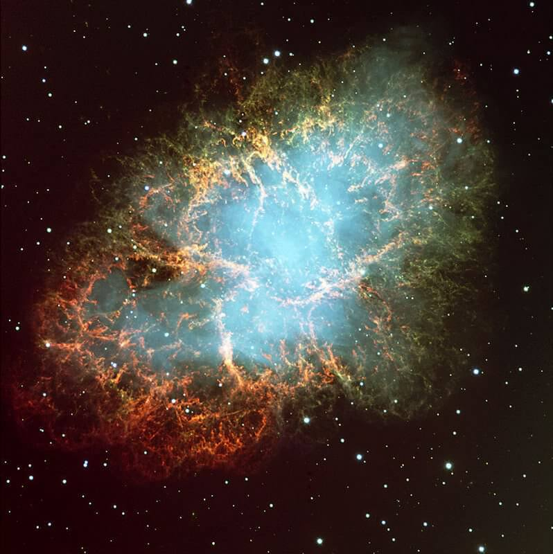
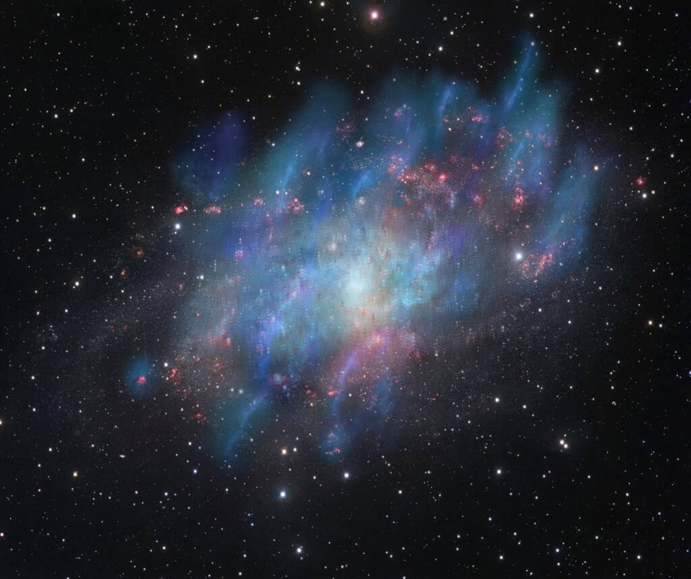
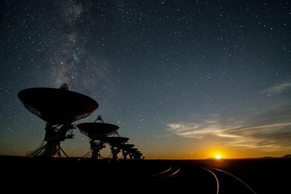

ဒီ အင်တာစတယ်လာ အာကာသ လေပြင်း အပြင်းအထန် တိုက်ခတ်လာရင် ကြယ်သစ်တွေ မွေးဖွားမှု ဖြစ်စဉ်ကို အနှောက်အယှက် ပေးတာမျိုး (သို့) ရပ်တန့် သွားစေတာ မျိုးအထိ ဖြစ်လာ နိုင်တယ်လို့ ဆိုပါတယ်။
ဒီ အချက်ကို ဂလက်ဆီ M33 ကို လေ့လာခဲ့တဲ့ နက္ခတ် ပညာရှင် တွေက တွေ့ရှိခဲ့တာ ဖြစ်ပါတယ်။ အမေရိကန် ပြည်ထောင်စု၊ နယူး မက္ကဆီကို ပြည်နယ်မှာ တည်ရှိတဲ့ Karl Jansky Very Large Array ရေဒီယို တယ်လီစကုပ်ကြီးကို အသုံးပြု လေ့လာနေတဲ့ ပညာရှင် တွေက ဒီ အချက်ကို တင်ပြလာတာ ဖြစ်ပါတယ်။
ဒီ အင်တာ စတယ်လာ လေပြင်း ထွက်ပေါ်လာ စေတဲ့ အဓိက ပင်ရင်း တရားခံ ကတော့ ဆူပါနိုဗာ လို့ခေါ်တဲ့ ကြယ်ပေါက်ကွဲမှု ဖြစ်စဉ်တွေပဲ ဖြစ်ပါတယ်။
ဒီလို ဆူပါနိုဗာ ပေါက်ကွဲမှုက ဖြစ်ပေါ် တိုက်ခတ်လာတဲ့ လေပြင်းတွေကြောင့် ကြယ်သစ် မွေးဖွားမှုကို ပျက်စီး စေနိုင်တယ် ဆိုတဲ့ အယူအဆဟာ အသစ်အဆန်း တော့ မဟုတ်ပါဘူး။ ဒီ အာကာသ လေပြင်းတွေဟာ ကြယ်သစ် မွေးဖွားမှု အတွက် လိုအပ်တဲ့ ကုန်ကြမ်း ဖြစ်တဲ့ ဟိုက်ဒြိုဂျင် ဓါတ်ငွေ့တွေကို လွင့်ထွက်သွားအောင် တိုက်ခတ် ပစ်နိုင်တာကြောင့် ကြယ်သစ် မွေးဖွားမှု ရပ်တန့် သွားမယ်လို့ ပညာရှင် တွေက ဟောကိန်း ထုတ်ထား ခဲ့ပါတယ်။

ကြယ် တစ်လုံး သက်တမ်း ကုန်ဆုံးသွားတဲ့ အခါ ကြယ်ရဲ့ အရွယ်အစားပေါ် မူတည်ပြီး အချို့ကြယ် တွေဟာ ဆူပါနိုဗာ ခေါ်တဲ့ ပြင်းထန်တဲ့ ကြယ်ပေါက်ကွဲမှုနဲ့တဲ့ အဆုံးသတ် သွားလေ့ ရှိကြပါတယ်။ ဒီလို ပေါက်ကွဲမှု ဖြစ်စဉ်မှာ ဓါတ်ငွေ့တွေ အရှိန် အဟုန်နဲ့ လွင့်ထွက်လာာပြီး “အာကာသ လေပြင်း” တိုက်ခတ်မှုကို ဖြစ်ပေါ် စေပါတယ်။
တချိန်တည်းမှာ ဒီ ပေါက်ကွဲမှုကနေ cosmic rays ခေါ်တဲ့ အာကာသ ရောင်ခြည် တွေလဲ အများအပြား ထွက်ပေါ်လို့ လာပါတယ်။
ဒီလို ဆူပါနိုဗာ ကြယ်ပေါက်ကွဲမှု အရေအတွက် များလေလေ၊ အာကာသ ရောင်ခြည် ထွက်တာများလေလေပဲ ဖြစ်ပါတယ်။ ဒီ ထွက်ပေါ်လာတဲ့ အာကာသ ရောင်ခြည် တွေဟာ ရှိနှင့်ပြီး အာကာသ လေပြင်းကို ပိုပြင်းထန်လောအောင် တွန်းအားပေး နေပါတယ်။
ဒီတွန်းအားကြောင့် အာကာသ လေပြင်း တိုက်ခတ်မှု ပိုမို ပြင်းထန် လာပါတယ်။ ဒီ လေပြင်း ကပဲ ကြယ်သစ်တွေ မွေးဖွားရာ ရပ်ဝန်းတွေ ဖြစ်တဲ့ နက်ဗြူလာ ဓါတ်ငွေ့ တိမ်တိုက်တွေ ထဲက ဟိုက်ဒြိုဂျင် ဓါတ်ငွေ့တွေကို လွင့်ပါး သွားအောင် တိုက်ခတ်လိုက်တာ ဖြစ်ပါတယ်။

အခုလို အာကာသ လေ တိုက်ခတ်မှုကို အာကာသ ရောင်ခြည်တွေက ပိုမို ပြင်းထန်စေတယ် ဆိုတဲ့ အထောက်အထား ကို ကျွန်တော်တို့ရဲ့ မစ်ကီးဝေး ဂလက်ဆီ (Milky Way) နဲ့ အိမ်နီးချင်း အင်ဒရိုမီဒါ ဂလက်ဆီ (Andromeda galaxy) တို့ထဲမှာလဲ ရှာဖွေ တွေ့ရှိ ထာားကြပါတယ်။ ဒါပေမယ့် ဒီလို ရှာဖွေတွေ့ရှိမှုဟာ M33 ဂလက်ဆီ အတွင်းမှာ ဒီဖြစ်စဉ်ကို ပထမဆုံး အကြိမ် ရှာဖွေ တွေ့ရှိပြီး နောက်မှ တွေ့ရှိခဲ့ ကြတာ ဖြစ်ပါတယ်။
အခု တွေ့ရှိမှုဟာ ဂလက်ဆီတွေ ဖြစ်ပေါ် မွေးဖွားမှုကို လေ့လာနေတဲ့ ပညာရှင် တွေအတွက်တော့ အရေးပါတဲ့ တွေ့ရှိမှု တစ်ခု ဖြစ်ပါတယ်။ ကြယ်သစ် မွေးဖွားမှုနဲ့ ဂလက်ဆီတွေ ဖြစ်ပေါ်မှု နှစ်ခု ဟာ ဆက်စပ်လျှက် ရှိပါတယ်။ ဂလက်ဆီ တွေဟာ မူလ အစက ကြယ် အစင်းရေ ရာဂဏန်းလောက် ရှိတဲ့ အစုအဝေး ကနေ စတင်ခဲ့တာ ဖြစ်ပါတယ်။ ဒီ ကြယ်သစ်တွေဟာ ဟိုက်ဒြိုဂျင် ဓါတ်ငွေ့တွေ ပေါပေါများများ ရှိတဲ့ ဓါတ်ငွေ့ တိမ်တိုက် အတွင်း စတင် မွေးဖွား လာခဲ့ ကြတာပါ။
ဒီလို ကြယ် အစုအဝေး လေးတွေ အချင်းချင်း ပေါင်စု မိပြီးမှ ဂလက်ဆီ တွေ အဖြစ် မွေးဖွား လာခဲ့ ကြတာလို့ ပညာရှင် တွေက ယူဆ ထားကြပါတယ်။
ကြယ်အစု အဝေး အသေးလေးတွေ အချင်းချင်း ပေါင်းမိကြပြီး ကြယ်စုကြီးတွေ ဖြစ်လာကြတယ်။ တခါ ကြယ်စုကြီးတွေ အချင်းချင်း ထပ်မံ ပေါင်းစုမိပြီး နောက်ဆုံးမှာတော့ ကြယ်အလုံးရေ ဘီလီယံ ရာချီတဲ့ ဂလက်ဆီ ကြီးတွေ ဖြစ်ပေါ်လာ ကြတာ ဖြစ်ပါတယ်။

တချိန်ထဲမှာ ကြယ်အို ကြီးတွေ သေဆုံး သွားကြတဲ့ အခါ သူတို့ရဲ့ ကြွင်းကျန်ရစ်တဲ့ ဓါတ်ငွေ့တွေနဲ့ အခြား ဒြပ်စင် တွေကို ဂလက်ဆီ ထဲကို ပြန်ပြီး ထုတ်လွှတ် ပေးကြပါတယ်။ ဒီ ဓါတ်ငွေ့တွေနဲ့ ဒြပ်စင် တွေကနေ နောက်ထပ် မျိုးဆက် ကြယ်တွေ ထပ်မံ မွေးဖွား လာကြ ပြန်ပါတယ်။
ဒါပေမယ့် ဧရာမ ကြယ်ကြီးတွေ ပေါက်ကွဲ သွားကြတဲ့ အခါ အင်အား ပြင်းထန်တဲ့ ကော့စမစ် အာကာသ လှိုင်း တွေ ထွက်လာ ကြပါတယ်။ ဒီလှိုင်းတွေက ကြယ်သစ်တွေ ဖွားမြင်နေတဲ့ ဓါတ်ငွေ့ တိမ်တိုက်တွေကို တွန်းဖယ်ပြီး အဝေးကို လွင့်စင်သွားအောင် ပြုလုပ် ပေးနိုင် ပါတယ်။
ဒီအချက်ဟာ ဖွံ့ဖြိုး ကြီးထွားနေဆဲ ဂလက်ဆီ တွေအတွက်တော့ သတင်းဆိုးပဲ ဖြစ်ပါတယ်။ ဒီ ဖွံ့ဖြိုးဆဲ ဂလက်ဆီ တွေမှာ ကြယ်သစ်တွေ ဖွားမြင်ရာ ရပ်ဝန်း အများအပြား ရှိနေပါတယ်။ ဒီ ဂလက်ဆီ တွေအတွင်း အင်အား ပြင်းထန်တဲ့ ဆူပါနိုဗာ ပေါက်ကွဲမှုတွေ အများအပြား ဖြစ်ပေါ်ခဲ့မယ် ဆိုရင် ဒီ ကြယ်သစ် မွေးဖွားမှုကို ထိခိုက် လာနိုင်ပါတယ်။
အခု M33 ဂလက်ဆီကို လေ့လာခဲ့ ကြတဲ့ သုတေသီ တွေဟာ ဒီ ဂလက်ဆီ အတွင်းက ကြယ်သစ်တွေ မွေးဖွားရာ ရပ်ဝန်းတွေ ကိုရော ကြယ်သစ်တွေ မွေးဖွားခြင်း မရှိတဲ့ အမြုံ ရပ်ဝန်းတွေ ကိုရော လေ့လာခဲ့ ကြပါတယ်။ ဒီ ရပ်ဝန်း နှစ်ခု အတွင်း မတူညီတဲ့ ဖြစ်ပေါ် ပြောင်းလဲ မှုတွေကို အဓိက ရှာဖွေပြီး အမြုံရပ်ဝန်း တွေမှာ ဘာ့ကြောင့် ကြယ်သစ်တွေ မမွေးဖွား နိုင်တာလဲ ဆိုတာကို အဖြေရှာ ကြဖို့ ဖြစ်ပါတယ်။
ဒီ လေ့လာမှုကနေ အခု ရလဒ်ကို ရှာဖွေ တွေ့ရှိ လာကြတာ ဖြစ်ပါတယ်။ ပညာရှင် တွေက အခု တွေ့ရှိချက်ဟာ စကြာဝဠာ အစောပိုင်းက ဂလက်ဆီ တွေ ဖွံ့ဖြိုး ကြီးထွားရေး အတွက် ပိုပြီး အရေးပါ လိမ့်မယ်လို့ ယူဆ ကြပါတယ်။
နောက်အဆင့် အနေနဲ့ အခြား ဂလက်ဆီ တွေ အတွင်းက ကြယ်သစ် မွေးဖွားရာ ရပ်ဝန်းတွေနဲ့ အမြုံရပ်ဝန်း တွေကို လေ့လာဖို့ ကြိုးစားနေ ကြပါတယ်။ ဒီနည်းအားဖြင့် အခု တွေ့ရှိချက်ဟာ မှန်တယ် မမှန်ဘူး ဆိုတာကို သက်သေ ပြနိုင်ကြမှာ ဖြစ်တယ်လို့ ဆိုပါတယ်။
Ref: Too Many Supernovae Can Slow Star Formation in a Galaxy | Universe Today